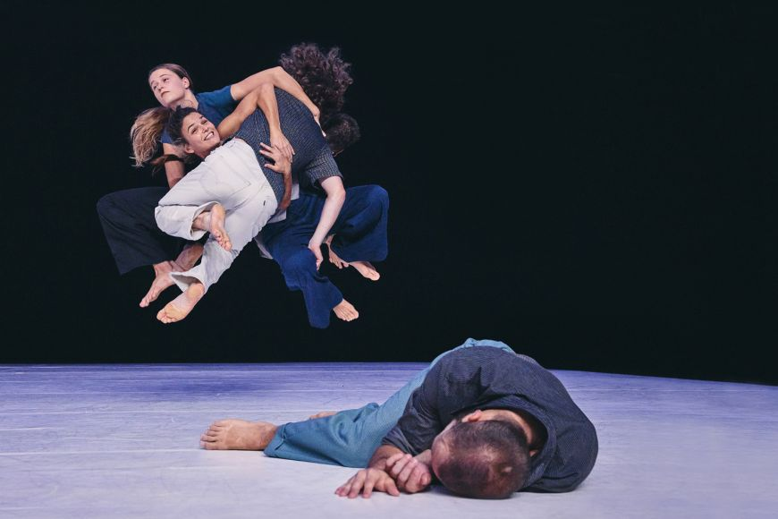
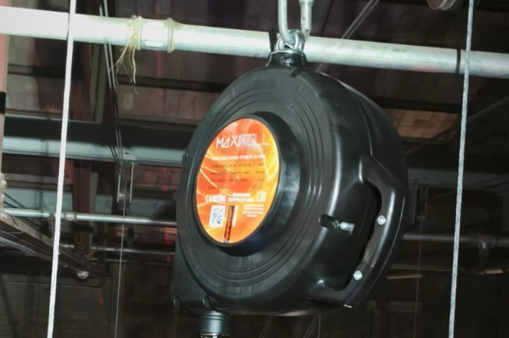

Göteborg
Jordi Casanovas | Teatre El Jardí | Dv. 13 de març
La Paula es presenta a casa d’en Sergi amb una proposta urgent: reconstruir l’última nit del viatge a Göteborg, on la seva connexió es va trencar per sempre.
Comprar entrades
Jordi Casanovas | Teatre El Jardí | Dv. 13 de març
La Paula es presenta a casa d’en Sergi amb una proposta urgent: reconstruir l’última nit del viatge a Göteborg, on la seva connexió es va trencar per sempre.
Comprar entrades
Josep Massó i Laura Herrera | Teatre El Jardí | Dg. 15 de març
Reviu la música de diverses generacions recordant el mític programa Aplauso.
Comprar entrades
Roser López Espinosa | Teatre El Jardí | Dv. 20 de març
Dins de cada món hi ha molts mons possibles. Com en un joc de miralls, podem entreveure els fils que ens connecten i els vincles que ens sostenen.
Comprar entrades
66 BUTAQUES | Sala Toni Montal (La Cate) | Dv. 21 de març
Després del seu precoç debut amb només 16 anys, assolit amb èxit, Paula Valls porta al 66butaques el concert de gira dels deu anys damunt els escenaris
Comprar entrades
Inspira Teatre | Teatre El Jardí | Dg. 22 de març
Nallar és una peça cantada que homenatja la saviesa de les dones que treballen la terra amb les mans, que ens transporta a un món de calidesa, arrel i llar.
Comprar entrades
Projecte educatiu | Teatre El Jardí | Dimecres 25 i dijous 26 de març
Després del seu precoç debut amb només 16 anys, assolit amb èxit, Paula Valls porta al 66butaques el concert de gira dels deu anys damunt els escenaris
Comprar entradesL’Ajuntament de Figueres ha obtingut una subvenció de la Generalitat de Catalunya per millorar la seguretat dels artistes i dels professionals tècnics dels equipaments culturals, en el marc de la convocatòria biennal per a la millora d’infraestructures d’equipaments culturals 2024-2026.
Llegir més →